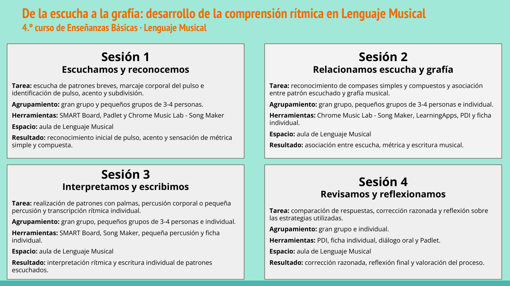

6. - Secuencia de actividades -
- Secuencia de actividades -
El proyecto se desarrollará en cuatro sesiones. En cada una iremos avanzando desde la escucha inicial hasta la escritura y la reflexión final.
| Sesión 1. Escuchamos y reconocemos | Escucharemos patrones rítmicos breves y marcaremos el pulso de forma corporal. Después identificaremos algunos elementos musicales como el pulso, el acento, la subdivisión y la sensación de métrica simple o compuesta. |
| Sesión 2. Relacionamos escucha y grafía | Escucharemos nuevos patrones y los relacionaremos con su grafía musical. Trabajaremos de forma colectiva, en pequeños grupos y también de manera individual con la ficha de trabajo. |
| Sesión 3. Interpretamos y escribimos | Interpretaremos algunos patrones con palmas, percusión corporal o pequeña percusión. Después realizaremos transcripciones rítmicas individuales, intentando que la escritura represente correctamente lo que hemos escuchado. |
| Sesión 4. Revisamos y reflexionamos | Compararemos las respuestas, corregiremos los errores de forma razonada y reflexionaremos sobre las estrategias que nos han ayudado a reconocer el ritmo, la métrica y la grafía musical. |
RECUERDA: Escuchar → pensar → comparar → responder → justificar → revisar
El objetivo no será terminar rápido, sino comprender mejor lo que escuchamos y aprender a explicarlo musicalmente.
